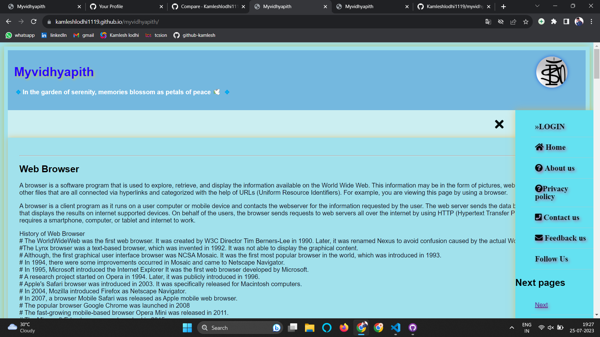
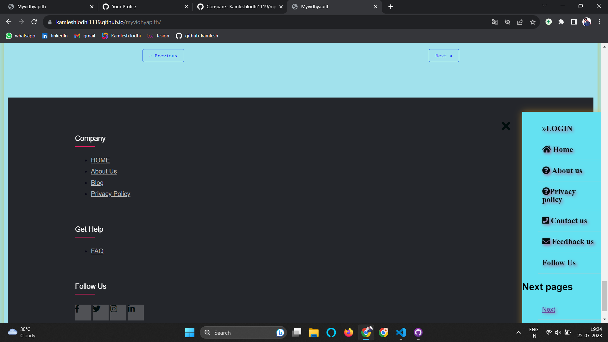

About Me

Enthusiastic computer science student eager to explore the endless possibilities of technology. With a curious mind and a hunger for knowledge,
I enjoy diving into intricate challenges and finding creative solutions. Whether it's coding,
designing, or learning about the latest tech trends,
I'm always ready to push my boundaries and embrace new experiences.
Looking forward to contributing my skills and passion to projects that shape the future and drive positive
change in the world.
Projects
Myvidhyapit - Student Study Material Website
Myvidhyapit is a web application that I developed as part of my personal project. It is dedicated to providing study materials and resources for students.
The website is designed to be user-friendly, allowing students to access
various educational materials in one place.
Technologies used in the development of Myvidhyapit include HTML, CSS, and JavaScript. The front-end was built using these technologies to ensure a responsive and visually appealing user interface.
The key features of Myvidhyapit include:
- Study materials for various subjects and courses
- Easy navigation and intuitive user interface
- Search functionality to find specific study materials
- Responsive design for optimal viewing on different devices
Myvidhyapit was an exciting project to work on, as it allowed me to combine my passion for web development with my desire to contribute to the education sector. The website aims to make learning resources more accessible to students and facilitate their learning journey.
 To explore the Myvidhyapit project, you can visit the live website by clicking the link below:
My Education
Infinity Management & Engineering College, Sagar (MP), 2020-Present
Bachelor of Technology in Computer Science and Engineering
CGPA: 8.60
Government High Secondary Excellence School, Sagar (MP), 2019-2020
12th (PCM) Aggregate: 84%
Government High Secondary School, Patna Khurd (MP), 2017-2018
10th Aggregate: 96%